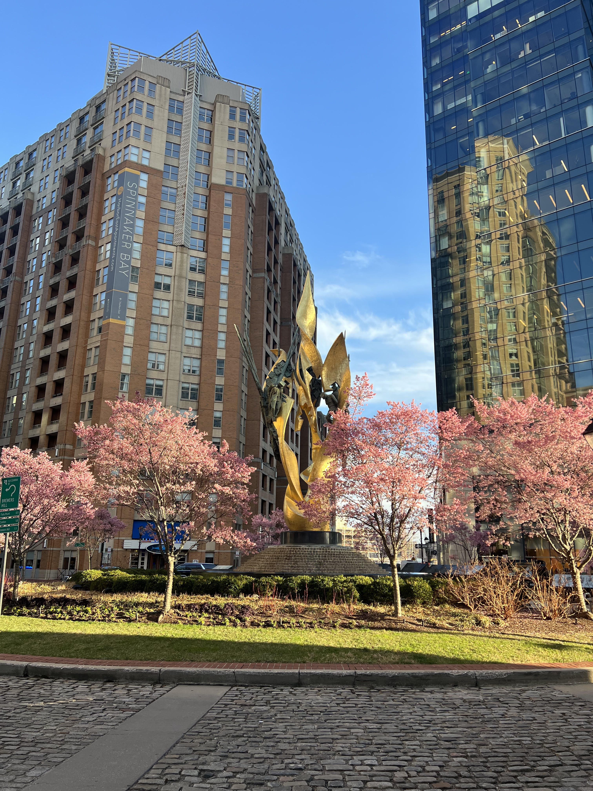

Photographer
Taking a picture is my passion. It gives me a chance to capture all the moments everywhere I go. It also allows me to share my memories with others.
I love to take pictures when I visit new countries and share them with my followers on my social media account.
